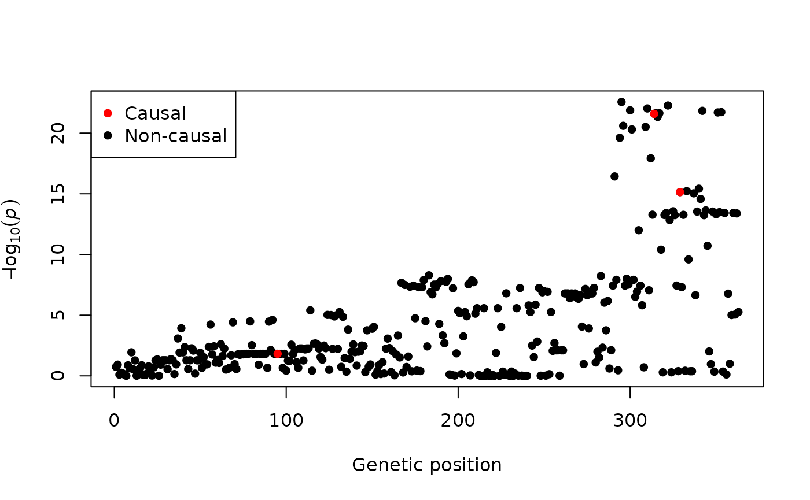
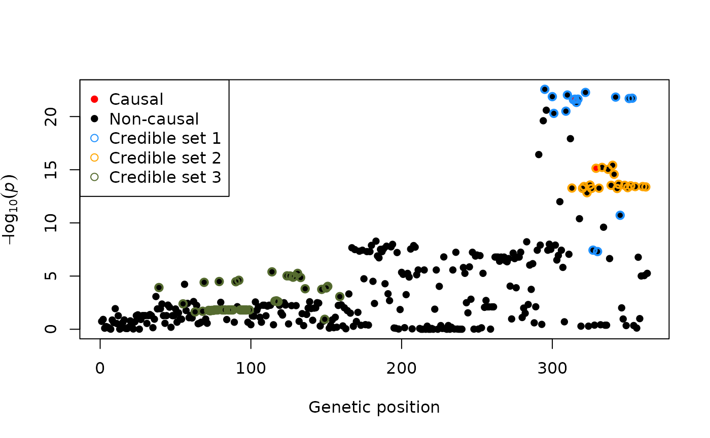

Tutorial
Ville Karhunen
19.09.2024
tutorial.Rmd
This is a step-by-step tutorial for conducting genetic fine-mapping on summary data using finimom package.
Input data
For the input data, the method requires
The effect sizes and their standard errors of variant-phenotype associations within the genetic region of interest from a genome-wide association study (source GWAS).
The linkage disequilibrium (LD) matrix of the variants within the genetic region.
Additionally, it is recommended to have the effect allele frequencies, source GWAS sample size, and variance of the phenotype (in the source GWAS). If the phenotype variance 1, then please scale the effect sizes and standard errors to correspond to standard-deviation units.
If you have only Z-scores available, please see the corresponding section below.
Example data
The R package comes with a simulated example dataset of 363 genetic variants:
str(exampledata)
#> List of 9
#> $ betahat : num [1:363] 0.0804 0.0927 -0.0253 -0.0165 -0.0128 ...
#> $ sebetahat : num [1:363] 0.0601 0.0595 0.0968 0.028 0.0276 ...
#> $ allelefreq: num [1:363] 0.0527 0.0541 0.0194 0.3751 0.4224 ...
#> $ truebetas : num [1:363] 0 0 0 0 0 0 0 0 0 0 ...
#> $ causals : num [1:3] 95 314 329
#> $ n : int 2763
#> $ n_ref : int 2637
#> $ insampleLD: num [1:363, 1:363] 1 0.971 0.545 0.288 0.244 ...
#> $ refLD : num [1:363, 1:363] 1 0.972 0.558 0.3 0.268 ...The object exampledata is a list, which has information
on
GWAS estimated effect sizes (
betahat),the standard errors (
sebetahat),allele frequencies (
allelefreqs),true causal effect sizes (
truebetas; this is a simulated dataset so these are known),indices of the true causal variants (
causals),GWAS source sample size (
n)LD reference sample size (
n_ref)in-sample LD matrix (
insampleLD)reference, or out-of-sample, LD matrix (
refLD)
# effect size estimates and their standard errors
beta <- exampledata$betahat
se <- exampledata$sebetahat
# Z-scores
zscores <- beta/se
# p-values
pvals <- 2*pnorm(abs(zscores), lower.tail = FALSE)
# allele frequencies
eaf <- exampledata$allelefreq
# LD matrix
R <- exampledata$insampleLD
# Source GWAS sample size
n <- exampledata$nThe summary statistics can be visualised via a Manhattan plot. In the following figure, the true causal variants are also highlighted.
plot(-log10(pvals), pch = 16, xlab = "Genetic position", ylab = bquote(-log[10](italic(p))))
points(exampledata$causals, -log10(pvals[exampledata$causals]), col = "red", pch = 16)
legend("topleft", legend = c("Causal", "Non-causal"), col = c("red", "black"), pch = 16)
The aim of fine-mapping is to identify the true causal variants (i.e. those in red in the above figure). In FiniMOM, this problem is answered by credible sets of causal signals.
Selecting hyperparameters
Two main hyperparameters need to be selected: , which controls the prior for the detectable effect sizes, and , which controls the prior for the number of causal variants. By default, is estimated based on the sample size, and for in-sample LD matrix, and for out-of-sample LD matrix. See the manuscript and its supplement for further details.
Running finimom
out <- finimom(beta = beta, se = se, eaf = eaf, R = R,
n = n,
insampleLD = TRUE,
verbose = TRUE,
ala = TRUE)
#> Calculating tau based on the sample size.
#> Clumping variants at r2=0.98
#> Sampling from the posterior...
#>
#> 12500 iterations done in 0.31 secondsThe output is a list, where the first element (samples)
has information on the Markov Chain Monte Carlo samples, the second
element (signals) is the posterior distribution for the
number of signals (or credible sets), and the third element is a list of
the obtained 95% credible sets.
names(out)
#> [1] "samples" "signals" "sets"
# posterior distribution for the number of signals
out$signals
#>
#> 3 4 5
#> 0.9341 0.0628 0.0031
# credible sets
out$sets
#> [[1]]
#> [1] 295 300 301 309 310 314 315 316 317 322 327 330 342 345 351 353
#>
#> [[2]]
#> [1] 313 320 321 323 325 326 329 331 333 337 339 340 341 343 344 348 350 352 355
#> [20] 360 362
#>
#> [[3]]
#> [1] 39 55 63 68 69 72 73 74 75 76 77 78 79 81 82 83 85 86 87
#> [20] 88 90 92 93 94 95 96 97 99 114 116 117 118 124 126 128 129 131 133
#> [39] 136 147 149 150 151 159To obtain the variant-wise posterior inclusion probabilities, run
pips <- get_pips(out$samples)Visualising results
One can extract the credible sets and visualise results e.g. as follows:
plot(-log10(pvals), pch = 16, xlab = "Genetic position", ylab = bquote(-log[10](italic(p))))
points(exampledata$causals, -log10(pvals[exampledata$causals]), col = "red", pch = 16)
points(out$sets[[1]], -log10(pvals[out$sets[[1]]]), col = "dodgerblue", pch = 1, lwd = 2)
points(out$sets[[2]], -log10(pvals[out$sets[[2]]]), col = "orange", pch = 1, lwd = 2)
points(out$sets[[3]], -log10(pvals[out$sets[[3]]]), col = "darkolivegreen", pch = 1, lwd = 2)
legend("topleft", legend = c("Causal", "Non-causal", "Credible set 1", "Credible set 2", "Credible set 3"),
col = c("red", "black", "dodgerblue", "orange", "darkolivegreen"), pch = c(16, 16, 1, 1, 1))
Using out-of-sample LD matrix
If using LD matrix from a reference panel, set
insampleLD = FALSE. In addition, it is recommended to check
for any LD discrepancies by check_ld = TRUE.
R_ref <- exampledata$refLD
out_refld <- finimom(beta = beta, se = se, eaf = eaf, R = R_ref,
n = n,
insampleLD = FALSE,
check_ld = TRUE,
verbose = TRUE,
ala = TRUE)
#> Calculating tau based on the sample size.
#> Clumping variants at r2=0.98
#> Sampling from the posterior...
#>
#> 12500 iterations done in 0.37 seconds
out_refld$sets
#> [[1]]
#> [1] 124 126 128 129 133 294 295 296 300 301 309 310 314 315 316 317 322 327 330
#> [20] 342 345 351 353
#>
#> [[2]]
#> [1] 313 320 321 323 325 326 329 331 333 337 339 340 341 343 344 348 350 352 355
#> [20] 360 362
#>
#> [[3]]
#> [1] 39 55 56 57 68 69 72 73 74 75 76 77 78 79 81 82 83 85 86
#> [20] 87 88 90 92 93 94 95 96 97 99 105 108 109 111 112 113 114 116 117
#> [39] 118 124 126 128 129 131 133 136 147 150 151 159 345In this case, some variants are in multiple credible sets. This
behaviour can be mitigated by selecting a desired purity level for the
credible sets (minimum absolute correlation for the variants within a
credible set) by using option purity:
out_refld2 <- finimom(beta = beta, se = se, eaf = eaf, R = R_ref,
n = n,
insampleLD = FALSE,
check_ld = TRUE,
verbose = TRUE,
ala = TRUE,
purity = 0.5)
#> Calculating tau based on the sample size.
#> Clumping variants at r2=0.98
#> Sampling from the posterior...
#>
#> 12500 iterations done in 0.30 seconds
out_refld2$sets
#> [[1]]
#> [1] 294 295 296 300 301 309 310 314 315 316 317 322 327 330 342 345 351 353
#>
#> [[2]]
#> [1] 313 320 321 323 325 326 329 331 333 337 339 340 341 343 344 348 350 352 355
#> [20] 360 362
#>
#> [[3]]
#> [1] 39 55 57 68 69 72 73 74 75 76 77 78 79 81 82 83 85 86 87
#> [20] 88 90 92 93 94 95 96 97 99 114 124 126 128 129 131 133 147 150 151
#> [39] 159Using Z scores
If only Z-scores are available (i.e. no information on the effect
sizes and their standard errors), then for a standardized (mean = 0,
standard deviation = 1) genetic variant and phenotype,
.
As these are (approximately) on the standardized scale, use option
standardize = FALSE for avoiding the standardization that
is done by default.
approx_se <- rep(1/sqrt(n), length(zscores))
approx_beta <- zscores*approx_se
out_zscore_only <- finimom(beta = approx_beta, se = approx_se,
eaf = NULL,
R = exampledata$insampleLD,
n = exampledata$n,
standardize = FALSE, # <--- use this option for Z-scores
insampleLD = TRUE,
ala = TRUE)
#> Calculating tau based on the sample size.
#> Clumping variants at r2=0.98
#> Sampling from the posterior...
#>
#> 12500 iterations done in 0.30 seconds
out_zscore_only$sets
#> [[1]]
#> [1] 295 300 309 310 314 315 317 322 327 330 342 345 351 353
#>
#> [[2]]
#> [1] 313 320 321 323 325 326 329 331 333 337 339 340 341 343 344 348 350 352 355
#> [20] 360 362
#>
#> [[3]]
#> [1] 55 63 68 69 72 73 74 75 76 77 78 79 81 82 83 85 86 87 88
#> [20] 90 92 93 94 95 96 97 99 114 116 117 118 124 126 128 129 131 133 136
#> [39] 147 150 151 159Session information
sessionInfo()
#> R version 4.4.1 (2024-06-14)
#> Platform: x86_64-pc-linux-gnu
#> Running under: Ubuntu 22.04.5 LTS
#>
#> Matrix products: default
#> BLAS: /usr/lib/x86_64-linux-gnu/openblas-pthread/libblas.so.3
#> LAPACK: /usr/lib/x86_64-linux-gnu/openblas-pthread/libopenblasp-r0.3.20.so; LAPACK version 3.10.0
#>
#> locale:
#> [1] LC_CTYPE=C.UTF-8 LC_NUMERIC=C LC_TIME=C.UTF-8
#> [4] LC_COLLATE=C.UTF-8 LC_MONETARY=C.UTF-8 LC_MESSAGES=C.UTF-8
#> [7] LC_PAPER=C.UTF-8 LC_NAME=C LC_ADDRESS=C
#> [10] LC_TELEPHONE=C LC_MEASUREMENT=C.UTF-8 LC_IDENTIFICATION=C
#>
#> time zone: UTC
#> tzcode source: system (glibc)
#>
#> attached base packages:
#> [1] stats graphics grDevices utils datasets methods base
#>
#> other attached packages:
#> [1] finimom_0.1.0
#>
#> loaded via a namespace (and not attached):
#> [1] digest_0.6.37 desc_1.4.3 R6_2.5.1 fastmap_1.2.0
#> [5] xfun_0.47 cachem_1.1.0 knitr_1.48 htmltools_0.5.8.1
#> [9] rmarkdown_2.28 lifecycle_1.0.4 cli_3.6.3 sass_0.4.9
#> [13] pkgdown_2.1.1 textshaping_0.4.0 jquerylib_0.1.4 systemfonts_1.1.0
#> [17] compiler_4.4.1 highr_0.11 tools_4.4.1 ragg_1.3.3
#> [21] evaluate_1.0.0 bslib_0.8.0 Rcpp_1.0.13 yaml_2.3.10
#> [25] jsonlite_1.8.8 rlang_1.1.4 fs_1.6.4